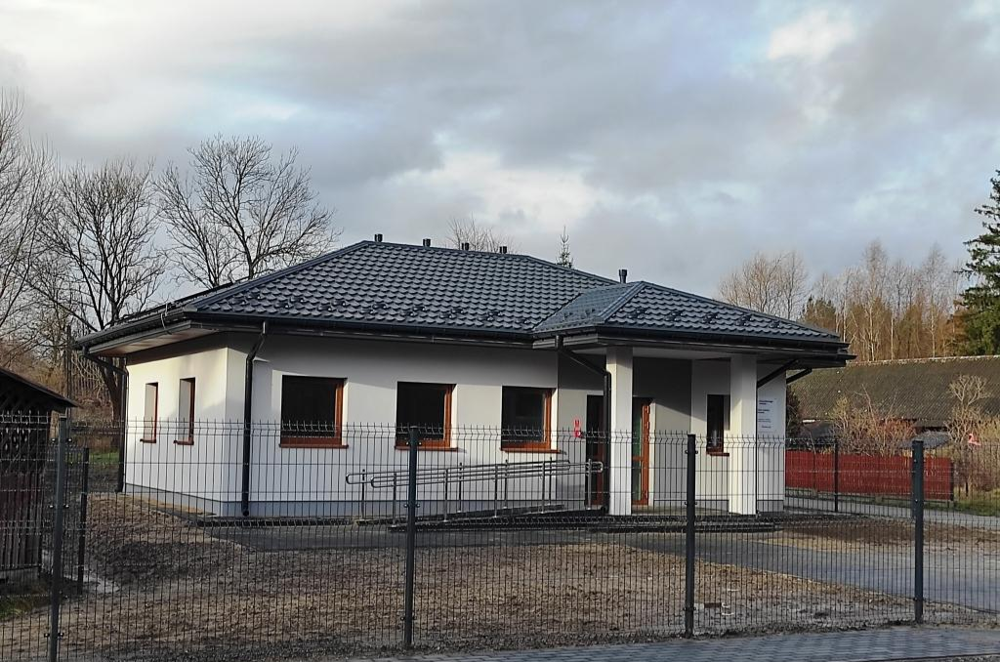
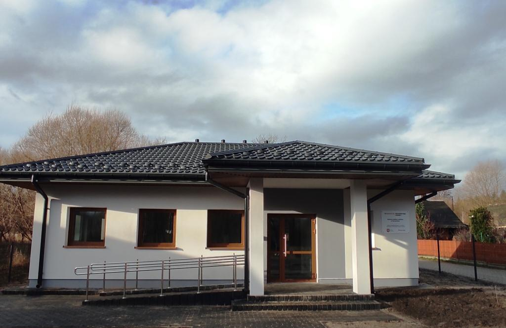

Pełnowymiarowa kuchnia
Zaplecze kuchenne do przygotowywania posiłków podczas spotkań i wydarzeń.
Miejsce spotkań i wspólnych chwil
Lokalne miejsce spotkań, zabawy i wspólnych inicjatyw mieszkańców Kochanowa.
Kochanów 17, gmina Borkowice

AdresKochanów 17
Godziny otwarciaŚr–Pt, 15:30–18:30
Napisz do nasswietlicakochanow@gmail.com
O świetlicy
Oto nasze skromne centrum rozrywki! Park atrakcji — m.in. Disco Polo, grill i mongolski balet, a to wszystko w jednym miejscu!
Tylko jeśli dobrze trafisz! Na plus darmowa toaleta z tyłu budynku.

Na miejscu
Przestrzeń przygotowana na wspólne spotkania, zabawę i organizację lokalnych wydarzeń.
Zaplecze kuchenne do przygotowywania posiłków podczas spotkań i wydarzeń.
Miejsce do wspólnej zabawy, rozmów i spędzania czasu w dobrym towarzystwie.
Przestrzeń dla mieszkańców na sąsiedzkie inicjatywy i wspólne chwile.
Bądźmy w kontakcie
Bądź na bieżąco z wydarzeniami, spotkaniami i ogłoszeniami.
Zapraszamy mieszkańców i sympatyków naszej świetlicy do nowej grupy. Publikujemy tam aktualności, ogłoszenia, informacje o wydarzeniach, zdjęcia ze spotkań oraz zaproszenia na kolejne inicjatywy. Za darmo!
Dołącz do grupy na Facebooku →Galeria
Kontakt
Masz pytanie dotyczące świetlicy? Napisz do nas lub przyjdź w godzinach otwarcia.